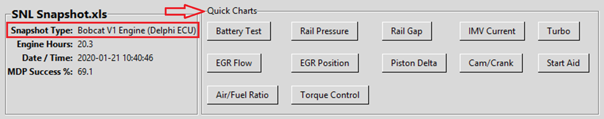

Quick Charts
Quick Charts provide instant access to the most commonly needed diagnostic views. These pre-configured charts are designed based on real-world diagnostic experience and focus on the parameters that matter most when troubleshooting engine issues.

Purpose of Quick Charts
Quick Charts eliminate the need to manually select PIDs and configure axes for common diagnostic scenarios. Instead of searching through hundreds of parameters, you can instantly view the most relevant data for specific diagnostic tasks.
Diagnostic Experience: The Quick Charts available in Snapshot Decoder are based on years of pragmatic diagnostic work experience.
Each chart focuses on the specific parameters and relationships that experienced technicians look at first when diagnosing particular issues.
This saves time and ensures you're looking at the right data to identify problems quickly.
Available Quick Charts
The Quick Charts available depend on the snapshot type that is loaded. Snapshot Decoder automatically detects your snapshot format and displays only the relevant charts for that engine type.
Common Quick Charts
- Battery Voltage - Evaluate electrical system health during cranking and running
- Rail Pressure - Analyze fuel system pressure control and performance
- Turbo - Use intake mainfold pressure during engine cranking and running
- EGR - Compare speed density to actual air flow through the engine
- Piston Delta - Compare individual piston acceleration to identify misfires
- Cam/Crank - Monitor camshaft and crankshaft status for engine starting
- Engine Use Data - Review operating conditions, speed bands, elevation, and exhaust temperatures
Using Quick Charts
To open a Quick Chart:
- Load a snapshot file
- Locate the Quick Charts panel at the top of the main window
- Click on any available Quick Chart button
- The chart opens immediately with pre-configured parameters and axes
Benefits of Quick Charts
- Speed - Access critical diagnostic views with a single click
- Consistency - Always view the same parameters for repeatable diagnostics
- Experience-Based - Focus on what matters based on real diagnostic scenarios
- No Configuration - Pre-configured axes and scales for optimal viewing
- Snapshot-Specific - Only shows charts relevant to your engine type
Customization
While Quick Charts provide instant access to common views, you can still create custom charts using the PID Descriptions panel if you need to analyze specific parameter combinations not covered by the Quick Charts.
Tip: Start with Quick Charts for initial diagnostics, then use custom charts to dive deeper into specific issues you identify.
Related Topics